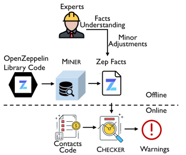

OpenZeppelin is a popular framework for building smart contracts. It provides common libraries (e.g., SafeMath), implementations of Ethereum standards (e.g., ERC20), and reusable components for access control and upgradability. However, unlike traditional software libraries, which are typically imported as static linking libraries or dynamic loading libraries, OpenZeppelin is utilized by Solidity contracts in the form of source code. As a result, developers often make custom modifications to their copies of OpenZeppelin code, which may lead to unintended security consequences.

In this paper, we conduct the first systematic study on the security of OpenZeppelin code used in real-world contracts. Specifically, we focus on the security checks in the official OpenZeppelin library and examine whether they are faithfully enforced in the relevant OpenZeppelin functions of real contracts. To this end, we propose a novel tool named ZepScope that comprises two components: MINER and CHECKER. First, MINER analyzes the official OpenZeppelin functions to extract the facts of explicit checks (i.e., the checks defined within the functions) and implicit checks (i.e., the conditions of calling the functions). Second, based on the facts extracted by MINER, CHECKER examines real contracts to identify their OpenZeppelin functions, match their checks with those in the facts, and validate the consequences for those inconsistent checks. By overcoming multiple challenges in developing ZepScope, we obtain not only the first taxonomy of OpenZeppelin checks but also the comprehensive results of checking the top 35,882 contracts from three mainstream blockchains.
A detailed workflow of MINER.
A detailed workflow of CHECKER.